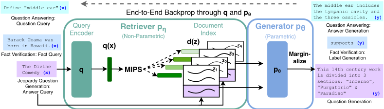
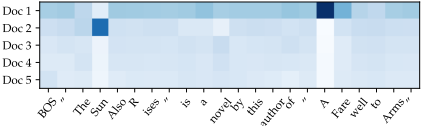
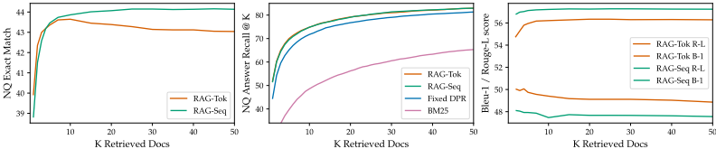
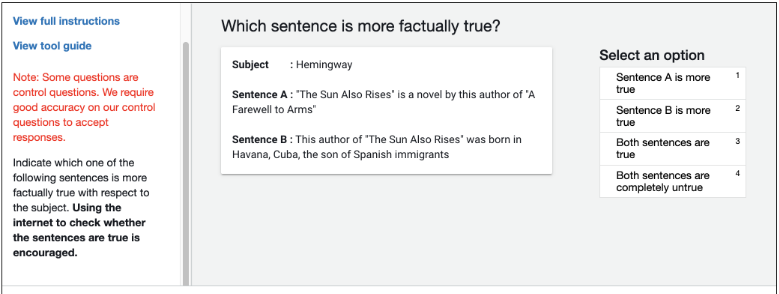

面向知识密集型 NLP 任务的检索增强生成（Retrieval-Augmented Generation, RAG）
论文针对大型预训练语言模型参数化知识难以精确访问、无法便捷更新且易产生幻觉的问题，提出 Retrieval-Augmented Generation（RAG）：以预训练 seq2seq 模型 BART-large 作为参数化记忆，以 DPR 稠密检索器加 Wikipedia 的 FAISS 向量索引（21M 文档）作为非参数化记忆，将检索文档视为隐变量并对 top-K 文档做边缘化，给出 RAG-Sequence 与 RAG-Token 两种形式并端到端联合微调。实验上，RAG 在开放域 QA（Natural Questions、WebQuestions、CuratedTrec）取得 SotA，NQ 达 44.5 EM 且可训练参数仅 626M，远小于 T5-11B；生成任务上比纯参数化 BART 更事实、更具体、更多样，人类评估中 RAG 更事实的比例为 42.7% 对 BART 的 7.1%。论文还证明通过热替换（hot-swap）文档索引即可更新模型的世界知识而无需重训。这是 RAG 范式的奠基性工作，对团队的知识库问答、检索增强与上下文组织实践有直接参考价值。
大型预训练语言模型虽在参数中存储事实知识，但访问与精确操纵知识的能力有限：难以扩展或修正记忆、无法为预测提供出处（provenance）、易产生幻觉，在知识密集型任务上落后于任务专用架构；此前结合可微检索的混合模型（REALM、ORQA）仅探索了抽取式开放域 QA，缺乏面向生成任务的通用方案。
提出 RAG 混合架构：参数化记忆为预训练 seq2seq 模型 BART-large（400M 参数），非参数化记忆为 Wikipedia 稠密向量索引（每篇文章切为 100 词片段共 21M 文档，用 FAISS 建 MIPS 索引），检索器采用预训练 DPR bi-encoder。将检索到的文档作为隐变量，对 top-K 文档做边缘化：RAG-Sequence 对整个输出序列使用同一文档，RAG-Token 允许每个 token 基于不同文档生成。训练时无需检索监督，固定文档编码器与索引，仅联合微调 query encoder 与 BART 生成器；解码针对两种模型分别设计 Thorough Decoding 与 Fast Decoding。
在 open Natural Questions、WebQuestions、CuratedTrec 三个开放域 QA 任务上取得 SotA，并在 TriviaQA 上大幅超越近期使用专用预训练目标的方法
NQ 上 RAG-Sequence 达 44.5 EM，参数量最接近的 T5-large（770M）仅 28.9 EM；RAG 总可训练参数 626M，远少于 T5-11B
当正确答案不在任何检索文档中时，RAG 在 NQ 上仍达 11.8% 准确率，而抽取式模型为 0%
Open MS-MARCO 抽象式 QA 上，RAG-Sequence 比 BART 高 2.6 Bleu 和 2.6 Rouge-L
Jeopardy 问题生成人类评估（452 对）：BART 更事实仅占 7.1%，RAG 更事实占 42.7%，两者均事实占 17%；RAG 在具体性上也大幅胜出
FEVER 3-way 分类距 SotA 在 4.3% 以内、2-way 在 2.7% 以内，且不使用检索监督；top-1 检索文档 71% 命中 gold 文章，top-10 内命中 90%
索引热替换实验：2016 索引答 2016 世界领导人 70% 正确，2018 索引答 2018 领导人 68%；索引错配时仅 12% 与 4%，证明可通过替换索引更新知识
消融实验：learned retrieval 在所有任务上优于冻结检索器；FEVER 上固定 BM25 反而最佳，其余任务可微检索更优（开放域 QA 上尤为关键）
测试时检索更多文档：RAG-Sequence 在 NQ 上单调提升，RAG-Token 在 10 篇时达峰
资源开销：全 Wikipedia 索引约需 100GB CPU 内存，用 FAISS 压缩工具可降至 36GB；训练使用 8 张 32GB V100，但训练与推理均可在单 GPU 运行
与 REALM、ORQA 等仅限抽取式 QA 的先前工作不同，本文首次给出将参数化与非参数化记忆结合用于 seq2seq 生成的通用微调配方；两个组件均为预训练并预载知识，无需昂贵的 salient span masking 专用预训练，也无需检索监督或 re-ranker/extractive reader；非参数化记忆由原始文本构成，具备人类可读与可写性，支持测试时通过编辑或替换索引动态更新模型知识；同时提出 RAG-Sequence/RAG-Token 两种隐变量边缘化形式与相应解码算法。
相关度级别：high
命中能力域：3.1 上下文工程与记忆 | 3.5 评测与可靠使用
理由：RAG 是团队核心能力域 3.1 中被点名的核心技术：本文正是 RAG 范式的奠基论文，系统给出了检索器+生成器的组合方式、隐变量边缘化的两种建模、top-K 文档数选择、learned retrieval 与 BM25 的消融对比等，都是团队构建知识库问答与上下文组织时的直接技术依据。同时论文对幻觉减少、事实性人类评估流程、参数与索引内存效率的分析，与 3.5 的可靠使用与成本效率关注点吻合。虽然论文面向 NLP 基准而非工程自动化场景，但其方法与结论是团队几乎所有检索增强应用的源头。
建议动作：深入精读并做内部分享
arXiv:2005.11401v4 [cs.CL] 2021年4月12日
面向知识密集型NLP任务的检索增强生成（Retrieval-Augmented Generation，RAG）
Patrick Lewis †‡, Ethan Perez ⋆,
Aleksandra Piktus †, Fabio Petroni †, Vladimir Karpukhin †, Naman Goyal †, Heinrich Küttler †,
Mike Lewis †, Wen-tau Yih †, Tim Rocktäschel †‡, Sebastian Riedel †‡, Douwe Kiela †
† Facebook 人工智能研究院（Facebook AI Research）；‡ 伦敦大学学院（University College London）；⋆ 纽约大学（New York University）；plewis@fb.com
大型预训练语言模型已被证明能够在参数中存储事实性知识，并在下游NLP任务上微调后取得最先进的结果。然而，它们访问和精确操纵知识的能力仍然有限，因此在知识密集型任务上，其性能落后于任务专用架构。此外，为其决策提供来源依据以及更新其世界知识仍是开放的研究问题。具有可微分访问机制、可访问显式非参数化记忆的预训练模型，迄今为止仅被研究用于抽取式下游任务。我们探索了一种面向检索增强生成（Retrieval-Augmented Generation, RAG）的通用微调方案——这类模型将预训练的参数化记忆与非参数化记忆相结合以进行语言生成。我们提出的RAG模型中，参数化记忆是一个预训练的seq2seq模型，而非参数化记忆是Wikipedia的稠密向量索引，通过一个预训练的神经检索器进行访问。我们比较了两种RAG形式：一种在整个生成序列上以相同的检索段落为条件，另一种则可以在每个词元（token）上使用不同的段落。我们在广泛的知识密集型NLP任务上对模型进行微调和评估，并在三个开放域问答（QA）任务上创造了最先进水平，超越了参数化seq2seq模型和任务专用的检索-抽取架构。对于语言生成任务，我们发现RAG模型生成的语言比最先进的纯参数化seq2seq基线更加具体、多样且符合事实。
预训练神经语言模型已被证明能够从数据中学习到大量深入的知识 [47]。它们无需访问任何外部记忆，即可充当参数化的隐式知识库 [51, 52]。尽管这一进展令人振奋，但此类模型确实存在缺点：它们无法轻松扩展或修改自身的记忆，无法直接提供对其预测结果的洞察，并且可能产生“幻觉” [38]。将参数化记忆与非参数化（即基于检索的）记忆相结合的混合模型 [20, 26, 48] 可以解决其中一些问题，因为知识可以被直接修改和扩展，且所访问的知识可以被检查和解释。REALM [20] 和 ORQA [31] 是最近提出的两种模型，它们将掩码语言模型 [8] 与可微检索器相结合，已展现出令人鼓舞的结果，但仅探索了开放域抽取式问答。在本文中，我们将参数化与非参数化混合记忆引入自然语言处理（NLP）的“主力”，即序列到序列（seq2seq）模型。

我们通过一种通用的微调方法，为预训练的参数化记忆生成模型赋予非参数化记忆，我们将该方法称为检索增强生成（Retrieval-Augmented Generation，RAG）。我们构建的 RAG 模型中，参数化记忆是一个预训练的 seq2seq transformer，而非参数化记忆是 Wikipedia 的稠密向量索引，通过一个预训练的神经检索器进行访问。我们将这些组件组合在一个端到端训练的概率模型中（图 1）。检索器（Dense Passage Retriever [26]，以下简称 DPR）以输入为条件提供潜在文档，随后 seq2seq 模型（BART [32]）以这些潜在文档连同输入为条件来生成输出。我们使用 top-K 近似对潜在文档进行边缘化处理，既可以按输出进行（假设同一段文档对所有词元负责），也可以按词元进行（其中不同的词元由不同的文档负责）。与 T5 [51] 或 BART 一样，RAG 可以在任何 seq2seq 任务上进行微调，此时生成器与检索器被联合学习。
此前已有大量工作提出通过非参数化记忆来增强系统的架构，这些架构针对特定任务从头训练，例如记忆网络 [64, 55]、栈增强网络 [25] 和记忆层 [30]。与之相反，我们探索了一种参数化与非参数化记忆组件均为预训练且预载入了大量知识的设定。至关重要的是，通过使用预训练的访问机制，无需额外训练即可具备访问知识的能力。
我们的结果凸显了将参数化与非参数化记忆同生成相结合以应对知识密集型任务的优势——这类任务若不借助外部知识源，人类也难以合理完成。我们的RAG模型在开放域Natural Questions [29]、WebQuestions [3]和CuratedTrec [2]上取得了最先进的结果，并在TriviaQA [24]上大幅超越近期采用专门预训练目标的方法。尽管这些是抽取式任务，我们发现无约束的生成优于以往的抽取式方法。对于知识密集型生成任务，我们在MS-MARCO [1]和Jeopardy问题生成上进行了实验，发现我们的模型生成的回复比BART基线更加符合事实、更加具体且更加多样。对于FEVER [56]事实验证任务，我们取得的结果与采用强检索监督的最先进流水线模型相差不超过4.3%。最后，我们证明可以替换非参数化记忆，从而随着世界的变化更新模型的知识。1
我们探索了检索增强生成（RAG）模型，这类模型使用输入序列 x 来检索文本文档 z，并在生成目标序列 y 时将其作为额外的上下文。如图 1 所示，我们的模型利用了两个组件：(i) 带有参数 η 的检索器 p_η(z|x)，它在给定查询 x 的情况下返回（经 top-K 截断的）文本段落上的分布；(ii) 由 θ 参数化的生成器 p_θ(y_i|x, z, y_{1:i−1})，它基于前 i−1 个 token y_{1:i−1} 构成的上下文、原始输入 x 以及检索到的一个段落 z 来生成当前 token。
1 用于运行 RAG 实验的代码已作为 HuggingFace Transformers Library [66] 的一部分开源，可在 https://github.com/huggingface/transformers/blob/master/examples/rag/ 获取。RAG 模型的交互式演示可在 https://huggingface.co/rag/ 获取。
为了端到端地训练检索器和生成器，我们将检索到的文档视为一个隐变量。我们提出了两种模型，它们以不同的方式对隐文档进行边缘化，从而得到生成文本上的分布。其中一种方法是 RAG-Sequence，该模型使用同一个文档来预测每个目标 token。第二种方法是 RAG-Token，它可以基于不同的文档来预测每个目标 token。在下文中，我们将正式介绍这两种模型，然后描述 p_η 和 p_θ 组件，以及训练和解码过程。
RAG-Sequence 模型 RAG-Sequence 模型使用同一个检索到的文档来生成完整序列。从技术上讲，它将检索到的文档视为单个隐变量，通过 top-K 近似对其进行边缘化，从而得到 seq2seq 概率 p ( y | x )。具体而言，先使用检索器检索出 top K 个文档，然后生成器为每个文档产生输出序列概率，再对这些概率进行边缘化，
RAG-Token 模型 在 RAG-Token 模型中，我们可以为每个目标 token 抽取不同的隐文档，并相应地进行边缘化。这使得生成器在生成答案时可以从多个文档中选择内容。具体而言，先使用检索器检索出 top K 个文档，然后生成器为每个文档产生下一个输出 token 的分布，接着进行边缘化，并对下一个输出 token 重复这一过程。形式化地，我们定义：
最后，我们指出，通过将目标类别视为长度为 1 的目标序列，RAG 也可以用于序列分类任务，在这种情况下 RAG-Sequence 与 RAG-Token 是等价的。
检索组件 p η ( z | x ) 基于 DPR [26]。DPR 采用双编码器（bi-encoder）架构：
其中 d ( z ) 是由 BERTBASE 文档编码器 [8] 生成的文档稠密表示，q ( x ) 是由查询编码器生成的查询表示，该查询编码器同样基于 BERTBASE。计算 top-k ( p η ( ·| x ))，即先验概率 p η ( z | x ) 最高的 k 个文档 z 组成的列表，是一个最大内积搜索（Maximum Inner Product Search, MIPS）问题，该问题可以在亚线性时间内近似求解 [23]。我们使用来自 DPR 的预训练双编码器来初始化我们的检索器并构建文档索引。该检索器经过训练，用于检索包含 TriviaQA [24] 问题答案和 Natural Questions [29] 问题答案的文档。我们将文档索引称为非参数记忆（non-parametric memory）。
生成器组件 p θ ( y i | x, z, y 1: i - 1 ) 可以用任意编码器-解码器（encoder-decoder）来建模。我们使用 BART-large [32]，一个具有 4 亿（400M）参数的预训练 seq2seq transformer [58]。为了在 BART 生成时将输入 x 与检索到的内容 z 结合起来，我们只是简单地将二者拼接在一起。BART 使用去噪目标（denoising objective）和多种不同的加噪函数进行预训练。它在多种多样的生成任务上取得了最先进（state-of-the-art）的结果，并优于规模相当的 T5 模型 [32]。此后，我们将 BART 生成器的参数 θ 称为参数记忆（parametric memory）。
我们对检索器和生成器组件进行联合训练，而对于应当检索哪些文档没有任何直接监督。给定由输入/输出对 ( x j , y j ) 构成的微调训练语料库，我们使用基于 Adam [28] 的随机梯度下降来最小化每个目标的负边际对数似然 ∑ j - log p ( y j | x j )。在训练过程中更新文档编码器 BERT d 的代价很高，因为这需要像 REALM 在预训练期间所做的那样 [20] 定期更新文档索引。我们发现这一步骤对于取得强大性能并非必要，因此保持文档编码器（及索引）固定不变，仅微调查询编码器 BERT q 和 BART 生成器。
3
在测试时，RAG-Sequence 和 RAG-Token 需要采用不同的方式来近似 arg max y p ( y | x ) 。
RAG-Token：RAG-Token 模型可以看作一个标准的自回归 seq2seq 生成器，其转移概率为：p ′ θ ( y i | x, y 1: i - 1 ) = ∑ z ∈ topk ( p ( ·| x )) p η ( z i | x ) p θ ( y i | x, z i , y 1: i - 1 ) 。在解码时，我们可以将 p ′ θ ( y i | x, y 1: i - 1 ) 代入标准的束解码器（beam decoder）。
RAG-Sequence：对于 RAG-Sequence，似然 p ( y | x ) 并不会分解为常规的逐 token 似然，因此我们无法用单次束搜索（beam search）来求解。作为替代，我们对每个文档 z 运行束搜索，并使用 p θ ( y i | x, z, y 1: i - 1 ) 对每个假设进行评分。这会得到一个假设集合 Y，其中某些假设可能并未出现在所有文档的束中。为了估计某个假设 y 的概率，我们对每个 y 未出现在其束中的文档 z 额外运行一次前向传播，将生成器概率与 p η ( z | x ) 相乘，然后对各束的概率求和以得到边际概率。我们将这种解码过程称为"Thorough Decoding"（彻底解码）。对于较长的输出序列，| Y | 可能会变得很大，从而需要大量前向传播。为了实现更高效的解码，我们可以做进一步的近似：当 y 在从 x, z i 进行的束搜索中未被生成时，令 p θ ( y | x, z i ) ≈ 0 。这样，一旦候选集合 Y 已经生成，就无需再运行额外的前向传播。我们将这种解码过程称为"Fast Decoding"（快速解码）。
我们在广泛的知识密集型任务上对 RAG 进行实验。在所有实验中，我们使用单一的 Wikipedia 转储（dump）作为非参数化知识源。遵循 Lee 等人 [31] 和 Karpukhin 等人 [26] 的做法，我们使用 2018 年 12 月的转储。每篇 Wikipedia 文章被切分为互不重叠的 100 词片段，共计 2100 万（21M）个文档。我们使用文档编码器为每个文档计算嵌入（embedding），并使用 FAISS [23] 构建单一的 MIPS 索引，采用分层可导航小世界（Hierarchical Navigable Small World）近似以实现快速检索 [37]。在训练期间，我们为每个查询检索 top k 个文档。训练时我们考虑 k ∈ { 5 , 10 }，并使用开发集数据为测试阶段设定 k。下面我们讨论每个任务的实验细节。
开放域问答（Open-domain Question Answering, QA）是一项重要的现实世界应用，也是知识密集型任务常用的测试平台 [20]。我们将问题和答案视为输入-输出文本对 ( x, y )，并通过直接最小化答案的负对数似然来训练 RAG。我们将 RAG 与流行的抽取式 QA 范式 [5, 7, 31, 26] 进行比较，在该范式中，答案是从检索到的文档中抽取的文本片段，主要依赖非参数化知识。我们还将 RAG 与“闭卷问答（Closed-Book QA）”方法 [52] 进行比较，后者与 RAG 一样会生成答案，但不利用检索，而是纯粹依赖参数化知识。我们考虑四个流行的开放域 QA 数据集：Natural Questions (NQ) [29]、TriviaQA (TQA) [24]、WebQuestions (WQ) [3] 和 CuratedTrec (CT) [2]。由于 CT 和 WQ 规模较小，我们遵循 DPR [26] 的做法，用我们的 NQ RAG 模型来初始化 CT 和 WQ 模型。我们使用与先前工作 [31, 26] 相同的训练/开发/测试集划分，并报告精确匹配（Exact Match, EM）分数。对于 TQA，为了与 T5 [52] 进行比较，我们还在 TQA Wiki 测试集上进行了评估。
RAG 模型能够超越简单的抽取式问答，通过自由形式的生成式文本生成来回答问题。为了在知识密集型场景下测试 RAG 的自然语言生成（NLG）能力，我们使用 MSMARCO NLG 任务 v2.1 [43]。该任务由问题、针对每个问题从搜索引擎检索到的十个黄金段落，以及从检索到的段落中标注出的完整句子答案组成。我们不使用所提供的段落，仅使用问题和答案，从而将 MSMARCO 视为一个开放域生成式问答任务。MSMARCO 中存在一些问题，在不访问黄金段落的情况下无法以与参考答案相匹配的方式作答，例如“加利福尼亚州 Volcano 的天气如何？”，因此在不使用黄金段落的情况下性能会更低。我们还注意到，某些 MSMARCO 问题无法仅凭 Wikipedia 回答。在这种情况下，RAG 可以依靠参数化知识来生成合理的回答。
为了评估 RAG 在非问答（QA）场景下的生成能力，我们研究了开放域问题生成。我们没有使用标准开放域 QA 任务中的问题——这类问题通常简短而简单——而是提出了更具挑战性的 Jeopardy 问题生成任务。Jeopardy 是一种不同寻常的形式，其玩法是根据关于某个实体的一条事实来猜测该实体。例如，“世界杯”（The World Cup）就是问题“1986 年，墨西哥成为第一个两次主办这项国际体育赛事的国家”的答案。由于 Jeopardy 问题是精确的事实性陈述，以答案实体为条件生成 Jeopardy 问题构成了一项具有挑战性的知识密集型生成任务。
我们使用 SearchQA [10] 的数据划分，其中包含 100K 训练样本、14K 验证样本和 27K 测试样本。由于这是一项新任务，我们训练了一个 BART 模型作为对比。遵循 [67]，我们使用经 SQuAD 微调的 Q-BLEU-1 指标 [42] 进行评估。Q-BLEU 是 BLEU 的一种变体，对实体匹配赋予更高的权重，在问题生成方面与人类判断的相关性高于标准指标。我们还进行了两项人工评估，一项用于评估生成内容的事实性（factuality），另一项用于评估特异性（specificity）。我们将事实性定义为一条陈述能否被可信的外部来源所证实，将特异性定义为输入与输出之间的高度相互依赖 [33]。我们遵循最佳实践，采用成对比较评估 [34]。评估者会看到一个答案以及两个生成的问题，一个来自 BART，另一个来自 RAG。随后要求他们从四个选项中选择一个：问题 A 更好、问题 B 更好、两者都好，或两者都不好。
FEVER [56] 要求判断一条自然语言声明（claim）是被维基百科（Wikipedia）支持还是反驳，或者是否没有足够的信息来做出判断。该任务需要从维基百科中检索与声明相关的证据，然后对这些证据进行推理，以判断该声明是真的、假的，还是仅凭维基百科无法验证的。FEVER 是一个检索问题与一个具有挑战性的蕴含推理任务相耦合的问题。它也为探索 RAG 模型处理分类而非生成任务的能力提供了一个合适的测试平台。我们将 FEVER 的类别标签（supports、refutes 或 not enough info）映射为单个输出 token，并直接使用声明-类别对进行训练。至关重要的是，与大多数其他 FEVER 方法不同，我们不使用对检索证据的监督。在许多真实世界的应用中，检索监督信号并不可得，因此不需要此类监督的模型将能适用于更广泛的任务。我们探索了两种变体：标准的三分类任务（supports/refutes/not enough info）以及 Thorne 和 Vlachos [57] 研究的二分类（supports/refutes）任务。在这两种情况下，我们均报告标签准确率。
表 1 展示了 RAG 与最先进模型的结果。在全部四个开放域问答（QA）任务上，RAG 都创造了新的最先进水平（TQA 上仅在与 T5 可比的划分上除外）。RAG 结合了“闭卷”（仅参数化）方法的生成灵活性与“开卷”基于检索方法的性能。与 REALM 和 T5+SSM 不同，RAG 无需昂贵且专门的“显著跨度掩码”（salient span masking）预训练 [20] 即可取得强劲结果。值得注意的是，RAG 的检索器是使用 DPR 的检索器初始化的，后者在 Natural Questions 和 TriviaQA 上使用了检索监督。RAG 与 DPR 问答系统相比表现更优，后者使用基于 BERT 的“交叉编码器”（cross-encoder）对文档进行重排序，并配合一个抽取式阅读器。RAG 证明了要达到最先进的性能，重排序器和抽取式阅读器都不是必需的。
即使在可以抽取答案的情况下，生成答案也有若干优势。包含答案线索但并不逐字包含答案的文档，仍然可以有助于生成正确答案，这是标准抽取式方法无法做到的，从而使对文档的边缘化（marginalization）更加有效。此外，即使正确答案不在任何检索到的文档中，RAG 也能生成正确答案，在这种情况下 NQ 上达到 11.8% 的准确率，而抽取式模型在此情况下得分为 0%。
5
| Model | NQ | TQA | WQ | CT | |
|---|---|---|---|---|---|
| Closed Book | T5-11B [52] | 34.5 36.6 | - /50.1 - /60.5 | 37.4 | - - |
| T5-11B+SSM[52] | 44.7 | ||||
| Open | REALM [20] | 40.4 | - / - | 40.7 | 46.8 |
| Book | DPR [26] | 41.5 | 57.9 / - | 41.1 | 50.6 |
| RAG-Token | 44.1 | 55.2/66.1 | 45.5 | 50.0 | |
| RAG-Seq. | 44.5 | 56.8/ 68.0 | 45.2 | 52.2 |
| | Model | NQ | TQA | WQ | CT |
| Model.Model | Jeopardy.B-1 | Jeopardy.QB-1 | MSMARCO.R-L | MSMARCO.B-1 | FVR3.Label | FVR2 Acc..Label |
|---|---|---|---|---|---|---|
| SotA | - | - | 49.8 * | 49.9 * | 76.8 | 92.2 * |
| BART | 15.1 | 19.7 | 38.2 | 41.6 | 64 | 81.1 |
| RAG-Tok. RAG-Seq. | 17.3 | 22.2 | 40.1 | 41.5 44.2 | 72.5 | 89.5 |
| 14.7 | 21.4 | 40.8 | 72.5 | 89.5 |
| Model.Model | Jeopardy.B-1 | Jeopardy.QB-1 | MSMARCO.R-L | MSMARCO.B-1 | FVR3.Label | FVR2 Acc..Label |
如表 2 所示，RAG-Sequence 在 Open MS-MARCO NLG 上比 BART 高出 2.6 个 Bleu 点和 2.6 个 Rouge-L 点。RAG 的性能接近最先进（state-of-the-art）模型，考虑到以下几点，这一结果令人印象深刻：(i) 那些模型能够访问包含生成参考答案所需特定信息的黄金段落（gold passages）；(ii) 许多问题在没有黄金段落的情况下无法回答；(iii) 并非所有问题都能仅凭 Wikipedia 回答。表 3 展示了我们模型生成的一些答案。从定性角度来看，我们发现 RAG 模型比 BART 更少产生幻觉，并且更频繁地生成事实正确的文本。稍后我们还将证明，RAG 的生成结果比 BART 的生成结果更加多样（见 §4.5）。
表2展示了我们在FEVER上的结果。对于三分类任务，RAG的得分与最先进模型相差在4.3%以内；这些最先进模型是具有领域特定架构和大量工程投入的复杂流水线系统，并且使用中间检索监督进行训练，而RAG并不需要这种监督。
6
文档1：他的作品被认为是美国文学的经典……他的战时经历构成了其小说《永别了，武器》（1929）的创作基础……
文档2：……20世纪20年代“迷惘的一代”侨居群体的艺术家。其处女作小说《太阳照常升起》于1926年出版。

| Task | Input | Model | Generation |
|---|---|---|---|
| MS- MARCO | define middle ear | BART RAG-T RAG-S | ? The middle ear is the part of the ear between the middle ear and the nose. The middle ear is the portion of the ear internal to the eardrum. The middle ear includes the tympanic cavity and the three ossicles. |
| MS- MARCO | what currency needed in scotland | BART RAG-T RAG-S | The currency needed in Scotland is Pound sterling. Pound is the currency needed in Scotland. The currency needed in Scotland is the pound sterling. |
| Jeopardy Question Gener -ation | Washington | BART RAG-T RAG-S | ? This state has the largest number of counties in the U.S. It's the only U.S. state named for a U.S. president It's the state where you'll find Mount Rainier National Park |
| Jeopardy Question Gener -ation | The Divine Comedy | BART RAG-T RAG-S | * This epic poem by Dante is divided into 3 parts: the Inferno, the Purgatorio &the Purgatorio Dante's "Inferno" is the first part of this epic poem This 14th century work is divided into 3 sections: "Inferno", "Purgatorio" &"Paradiso" |
| Task | Input | Model | Generation |
对于二分类任务，我们与Thorne和Vlachos [57]进行了比较，他们在给定金标准证据句的条件下训练RoBERTa [35]来对声明进行真伪分类。尽管RAG仅被提供声明本身并需自行检索证据，其准确率与该模型相差在2.7%以内。我们还分析了RAG检索到的文档是否与FEVER中标注为金标准证据的文档相对应。我们计算了RAG检索到的前k个文档与金标准证据标注之间在文章标题上的重叠度。我们发现，在71%的情况下，检索到的排名第一的文档来自金标准文章；在90%的情况下，前10篇检索到的文章中包含金标准文章。
生成多样性 4.3节表明，在Jeopardy问题生成任务上，RAG模型比BART更具事实性且更加具体。借鉴近期关于促进多样性的解码的工作 [33, 59, 39]，我们还通过计算不同模型生成的去重ngram数量与ngram总数之比来考察生成多样性。表5显示，RAG-Sequence的生成结果比RAG-Token更多样，且两者都显著比BART更多样，而无需使用任何促进多样性的解码方法。
检索消融实验 RAG的一个关键特性是学习为任务检索相关信息。为评估检索机制的有效性，我们进行了在训练期间冻结检索器的消融实验。如表6所示，学习到的检索提升了所有任务的结果。
我们将RAG的稠密检索器与基于词重叠的BM25检索器 [53] 进行比较。在此，我们用一个固定的BM25系统替换RAG的检索器，并在计算 p ( z | x ) 时将BM25检索分数用作logits。表6显示了结果。对于FEVER，BM25表现最佳，这可能是因为FEVER的声明高度以实体为中心，因而非常适合基于词重叠的检索。可微检索在所有其他任务上都改善了结果，尤其是对于开放域问答（Open-Domain QA）任务，可微检索在其中至关重要。
索引热插拔 像RAG这类非参数化记忆模型的一个优点是，知识可以在测试时轻松更新。像T5或BART这类纯参数化模型则需要进一步的训练，才能随着世界的变化更新其行为。为了演示这一点，我们使用DrQA [5] 2016年12月的Wikipedia转储构建了一个索引，并将使用该索引的RAG输出与主结果中使用的较新索引（2018年12月）进行比较。我们准备了一份包含82位在这两个日期之间发生更替的世界领导人的列表，并使用模板"Who is {position}?"（例如"Who is the President of Peru?"）分别用每个索引来查询我们的NQ RAG模型。使用2016年索引回答2016年的世界领导人时，RAG的正确率为70%；使用2018年索引回答2018年的世界领导人时，正确率为68%。索引不匹配时准确率很低（2018年索引配2016年领导人为12%，2016年索引配2018年领导人为4%）。这表明我们只需替换其非参数化记忆，即可更新RAG的世界知识。
7
| Factuality | Specificity | |
|---|---|---|
| BART better | 7.1% | 16.8% |
| RAG better | 42.7% | 37.4% |
| Both good | 11.7% | 11.8% |
| Both poor | 17.7% | 6.9% |
| No majority | 20.8% | 20.1% |
| | Factuality | Specificity |
| MSMARCO | Jeopardy QGen | |
|---|---|---|
| Gold | 89.6% | 90.0% |
| BART | 70.7% | 32.4% |
| RAG-Token | 77.8% | 46.8% |
| RAG-Seq. | 83.5% | 53.8% |
| | MSMARCO | Jeopardy QGen |
| Model. | NQ. | TQA.Exact Match | WQ.Exact Match | CT. | Jeopardy-QGen.B-1 | Jeopardy-QGen.QB-1 | MSMarco.R-L | MSMarco.B-1 | FVR-3.Label Accuracy | FVR-2.Label Accuracy |
|---|---|---|---|---|---|---|---|---|---|---|
| RAG-Token-BM25 | 29.7 | 41.5 | 32.1 | 33.1 | 17.5 | 22.3 | 55.5 | 48.4 | 75.1 | 91.6 |
| RAG-Sequence-BM25 | 31.8 | 44.1 | 36.6 | 33.8 | 11.1 | 19.5 | 56.5 | 46.9 | ||
| RAG-Token-Frozen | 37.8 | 50.1 | 37.1 | 51.1 | 16.7 | 21.7 | 55.9 | 49.4 | 72.9 | 89.4 |
| RAG-Sequence-Frozen | 41.2 | 52.1 | 41.8 | 52.6 | 11.8 | 19.6 | 56.7 | 47.3 | ||
| RAG-Token | 43.5 | 54.8 | 46.5 | 51.9 | 17.9 | 22.6 | 56.2 | 49.4 | 74.5 | 90.6 |
| RAG-Sequence | 44 | 55.8 | 44.9 | 53.4 | 15.3 | 21.5 | 57.2 | 47.5 |
| Model. | NQ. | TQA.Exact Match | WQ.Exact Match | CT. | Jeopardy-QGen.B-1 | Jeopardy-QGen.QB-1 | MSMarco.R-L | MSMarco.B-1 | FVR-3.Label Accuracy | FVR-2.Label Accuracy |
检索更多文档的影响 模型在训练时使用5个或10个检索到的潜在文档，我们未观察到二者在性能上存在显著差异。我们可以在测试时灵活调整检索文档的数量，这会影响性能和运行时间。图3（左）显示，在测试时检索更多文档会单调地提升RAG-Sequence的开放域问答结果，但RAG-Token的性能在检索10个文档时达到峰值。图3（右）显示，检索更多文档会提高RAG-Token的Rouge-L，但以牺牲Bleu-1为代价，而这一效应对RAG-Sequence而言不太明显。

单任务检索 先前的工作已经表明，若单独考虑，检索能够提升多种自然语言处理（NLP）任务的性能。这些任务包括开放域问答 [5, 29]、事实核查 [56]、事实补全 [48]、长形式问答 [12]、维基百科文章生成 [36]、对话 [41, 65, 9, 13]、翻译 [17] 以及语言建模 [19, 27]。我们的工作统一了此前将检索融入各个任务所取得的成功，表明单一的基于检索的架构能够在多个任务上取得强劲性能。
面向NLP的通用架构 此前关于NLP任务通用架构的工作在不使用检索的情况下取得了巨大成功。研究表明，单个预训练语言模型经过微调 [49, 8] 后，可以在GLUE基准测试 [60, 61] 中的各种分类任务上取得强劲性能。GPT-2 [50] 随后表明，单个从左到右的预训练语言模型可以在判别式任务和生成式任务上都取得强劲性能。为进一步提升性能，BART [32] 和 T5 [51, 52] 提出了单个预训练的编码器-解码器模型，利用双向注意力在判别式任务和生成式任务上取得更强的性能。我们的工作旨在通过学习一个检索模块来增强预训练的生成式语言模型，从而以单一、统一的架构拓展可能任务的空间。
学习式检索 在信息检索领域，关于学习检索文档已有大量研究工作，近期更多是使用与我们类似的预训练神经语言模型 [44, 26]。一些工作优化检索模块以辅助特定的下游任务（例如问答），其手段包括搜索 [46]、强化学习 [6, 63, 62]，或采用与我们工作相同的隐变量方法 [31, 20]。这些成功的工作利用不同的基于检索的架构和优化技术在单个任务上取得强劲性能，而我们则表明，单一的基于检索的架构经过微调即可在多种任务上取得强劲性能。
基于记忆的架构（Memory-based Architectures） 我们的文档索引可以被视为一个供神经网络加以关注（attend to）的大型外部记忆，类似于记忆网络（memory networks）[64, 55]。同期工作 [14] 学习为输入中的每个实体检索一个训练得到的嵌入（embedding），而不是像我们的工作那样检索原始文本。其他工作则通过在事实嵌入（fact embeddings）上进行关注来提升对话模型生成事实性文本的能力 [15, 13]。我们的记忆的一个关键特征在于它由原始文本而非分布式表示构成，这使得该记忆既（i）人类可读，为我们的模型赋予了一种可解释性，又（ii）人类可写，使我们能够通过编辑文档索引来动态更新模型的记忆。这种方法也被用于知识密集型对话，其中生成器直接以检索到的文本为条件，尽管这些文本是通过 TF-IDF 而非端到端学习的检索获得的 [9]。
检索-编辑方法（Retrieve-and-Edit approaches） 我们的方法与检索-编辑风格的方法有一些相似之处，后者针对给定输入检索一个相似的训练输入-输出对，然后对其进行编辑以提供最终输出。这些方法已在包括机器翻译（Machine Translation）[18, 22] 和语义解析（Semantic Parsing）[21] 在内的多个领域被证明是成功的。我们的方法确实存在若干不同之处，包括较少强调对检索到的单个条目进行轻微编辑，而是强调聚合来自多段检索内容的信息，以及学习潜在检索（latent retrieval），并检索证据文档而非相关的训练对。尽管如此，RAG 技术在这些场景中也可能表现良好，并可能成为有前景的未来工作。
在这项工作中，我们提出了能够访问参数化记忆与非参数化记忆的混合生成模型。我们证明了我们的 RAG 模型在开放域问答（open-domain QA）上取得了最先进的结果。我们发现，与纯参数化的 BART 相比，人们更偏好 RAG 的生成结果，认为 RAG 更具事实性且更加具体。我们对学习到的检索组件进行了深入的研究，验证了其有效性，并展示了如何通过热插拔检索索引来更新模型，而无需任何重新训练。在未来的工作中，探究这两个组件能否从头开始联合预训练——无论是采用类似 BART 的去噪目标，还是其他某种目标——或将大有裨益。我们的工作开辟了关于参数化记忆与非参数化记忆如何交互以及如何最有效地将二者结合起来的新研究方向，并展现出应用于各种自然语言处理（NLP）任务的前景。
9
与以往的工作相比，本工作带来了若干积极的社会效益：由于它更牢固地立足于真实的事实性知识（在本例中为 Wikipedia），因此其“幻觉”程度更低，生成的内容更加符合事实，并提供了更强的可控性与可解释性。检索增强生成（RAG）可被应用于各种各样的场景并直接造福社会，例如为其配备医学索引并就该主题向其提出开放域问题，或者帮助人们更高效地完成本职工作。
这些优势也伴随着潜在的弊端：Wikipedia 或任何潜在的外部知识源，很可能永远无法做到完全符合事实且彻底摆脱偏见。由于 RAG 可以被用作语言模型，与针对 GPT-2 [50] 的类似担忧在此同样成立，尽管可以说程度较轻，包括它可能被用于生成辱骂性内容、新闻或社交媒体上的伪造或误导性内容；冒充他人；或者自动化地生产垃圾邮件/网络钓鱼内容 [54]。先进语言模型还可能在未来几十年内导致各种工作的自动化 [16]。为了缓解这些风险，可以利用 AI 系统来对抗误导性内容和自动化的垃圾邮件/网络钓鱼。
对于开放域问答（Open-domain QA），我们报告 RAG-Token 模型使用 15 篇检索文档时的测试结果。对于 RAG-Sequence 模型，我们报告使用 50 篇检索文档时的测试结果，并且由于答案通常较短，我们采用 Thorough Decoding（彻底解码）方法。对于问答任务，我们使用贪婪解码（greedy decoding），因为我们并未发现束搜索（beam search）能带来结果提升。对于 Open-MSMarco 和 Jeopardy 问题生成任务，我们对 RAG-Token 和 RAG-Sequence 均报告使用十篇检索文档时的测试结果，并且我们还训练了一个 BART-large 模型作为基线。我们使用的束大小（beam size）为 4，并对 RAG-Sequence 模型采用 Fast Decoding（快速解码）方法，因为 Thorough Decoding 并未带来性能提升。

图4展示了用于人工评估的用户界面。为避免屏幕位置带来的偏差，每个示例中句子A和句子B分别对应哪个模型是随机分配的。我们鼓励标注者利用互联网对相关主题进行研究，并在一个完整的说明标签页中向其提供了详细的说明和示例解答。我们加入了一些标准句子（gold sentences），以评估标注者的准确性。有两名标注者在这些示例上表现不佳，其标注结果已从结果中剔除。
我们使用 Fairseq [45] 训练所有 RAG 模型和 BART 基线。2 我们采用混合精度浮点运算 [40] 进行训练，将训练分布在 8 块 32GB NVIDIA V100 GPU 上，不过训练和推理也可以在单块 GPU 上运行。我们发现使用 FAISS 在 CPU 上进行 Maximum Inner Product Search 的速度已足够快，因此我们将文档索引向量存储在 CPU 上，对于整个 Wikipedia 而言这需要约 100 GB 的 CPU 内存。在提交之后，我们已将代码移植到 HuggingFace Transformers [66] 3，其性能与之前的版本相当，但实现更加简洁、更易于使用。该版本也已开源。我们还使用 FAISS 的压缩工具对文档索引进行了压缩，将 CPU 内存需求降至 36GB。运行 RAG 实验的脚本可在 https://github.com/huggingface/transformers/ blob/master/examples/rag/README.md 找到，RAG 模型的交互式演示可在 https://huggingface.co/rag/ 找到。
2 https://github.com/pytorch/fairseq
3 https://github.com/huggingface/transformers
17
对于开放域问答（open-domain QA），同一个问题通常存在多个答案标注。抽取式模型在训练时会利用这些答案标注，因为在准备训练数据时，通常会将所有答案标注用于在文档中查找匹配。对于 RAG，我们同样利用了 Natural Questions 和 WebQuestions 的多个标注样本，方法是将每个 ( q, a ) 对分别用于训练模型，从而带来了准确率的小幅提升。对于 TriviaQA，同一个问题往往存在许多有效答案，其中一些并不适合作为训练目标，例如表情符号或拼写变体。对于 TriviaQA，如果某个候选答案未出现在该查询的前 1000 篇文档中，我们就将其过滤掉。
CuratedTrec 预处理 CuratedTrec 的答案以正则表达式的形式给出，这被认为是该数据集不适合答案生成模型的原因之一 [20]。为了克服这一问题，我们采用了一个预处理步骤：首先为每个查询检索前 1000 篇文档，然后将最频繁匹配正则表达式模式的答案用作监督目标。如果未找到任何匹配，我们则求助于一个简单的启发式方法：为每个正则表达式生成所有可能的排列，并将正则表达式嵌套树结构中的非确定性符号替换为空格。
TriviaQA 评测设置 开放域问答社区习惯上将公开的开发集用作测试集，因为问答数据集的测试数据通常是受限的，且专用于阅读理解目的。我们使用与 DPR [26] 相同的数据集划分来报告结果，这与开放域问答的通行做法一致。对于 TriviaQA，该测试集是公开的 TriviaQA Web Development 划分。Roberts 等人 [52] 则使用了 TriviaQA 官方 Wikipedia 测试集。Févry 等人 [14] 为了与 Roberts 等人 [52] 进行比较而遵循了这一惯例（参见 [14] 的附录）。我们在两个测试集上都报告结果，以便与这两种方法进行公平比较。我们发现，使用官方 Wiki 测试集时我们的性能远高于使用更常规的开放域测试集，我们将此归因于官方 Wiki 测试集的问题从 Wikipedia 中更容易得到回答。
在 FEVER 分类任务中，我们遵循 [32] 的做法，首先重新生成论断（claim），然后使用最终隐藏状态的表示进行分类，最后跨文档进行边缘化以获得类别概率。FEVER 任务传统上包含两个子任务。第一个是将论断分类为"Supported"（支持）、"Refuted"（反驳）或"Not Enough Info"（信息不足），这是我们在正文中所探讨的任务。FEVER 的另一个子任务涉及从 Wikipedia 中抽取句子作为支持分类预测的证据。由于 FEVER 使用的 Wikipedia 数据转储（dump）与我们不同，直接处理该任务并非易事。我们希望在未来工作中解决这一问题。
我们尝试在 RAG 中加入“空文档”（Null document）机制，其做法类似于 REALM [20]，以便对给定输入无法检索到有用信息的情况进行建模。具体而言，若检索到 k 个文档，我们会额外“检索”一个空文档，并为该空文档预测一个 logit，然后在 k + 1 个预测上进行边缘化。我们探索了通过学习以下方式来对该空文档 logit 进行建模：(i) 为空文档学习一个文档嵌入（document embedding），(ii) 学习一个静态偏置项（bias term），或 (iii) 训练一个神经网络来预测该 logit。我们并未发现这些方法能带来性能提升，因此出于简洁性的考虑，我们将其省略。对于 Open MS-MARCO（该任务中并非总能检索到有用的文档），我们观察到模型学会了对那些不太可能从检索中受益的问题总是检索某一特定的文档集合，这表明空文档机制对于 RAG 而言可能并非必要。
我们的 RAG 模型包含 DPR 的 BERT-base 查询编码器与文档编码器的可训练参数，两者各有 110M 参数（尽管我们并未自行训练文档编码器），以及来自 BART-large 的 406M 可训练参数，406M 参数，总计 626M 可训练参数。性能最佳的“闭卷”（仅参数化）开放域问答模型是拥有 110 亿可训练参数的 T5-11B。与我们模型参数量最接近的 T5 模型是 T5-large（770M 参数），其在 Natural Questions [52] 上取得了 28.9 EM 的分数，远低于 RAG-Sequence 所达到的 44.5，这表明混合参数化/非参数化模型只需少得多的可训练参数即可获得出色的开放域问答性能。非参数化记忆索引本身不包含可训练参数，但由 21M 个 728 维向量组成，共包含 15.3B 个数值。这些向量可以轻松地以 8 位浮点精度存储，以便控制内存和磁盘占用。
18
| Task | Train | Development | Test |
|---|---|---|---|
| Natural Questions | 79169 | 8758 | 3611 |
| TriviaQA | 78786 | 8838 | 11314 |
| WebQuestions | 3418 | 362 | 2033 |
| CuratedTrec | 635 | 134 | 635 |
| Jeopardy Question Generation | 97392 | 13714 | 26849 |
| MS-MARCO | 153726 | 12468 | 101093* |
| FEVER-3-way | 145450 | 10000 | 10000 |
| FEVER-2-way | 96966 | 6666 | 6666 |
| Task | Train | Development | Test |
在初步实验中，我们观察到，对于故事生成 [11] 等某些任务，检索组件会发生“坍塌”（collapse），即学会无论输入是什么都检索相同的文档。在这些情况下，一旦检索发生坍塌，生成器就会学会忽略这些文档，此时 RAG 模型的表现将与 BART 相当。这种坍塌的原因可能在于某些任务对事实知识的要求不够明确，也可能是目标序列较长，导致检索器获得的梯度信息量较少。Perez 等人 [46] 在通过优化检索组件来提升下游任务性能时，同样发现了虚假的检索结果。
我们各数据集中的训练、开发和测试数据点数量如表 7 所示。
19